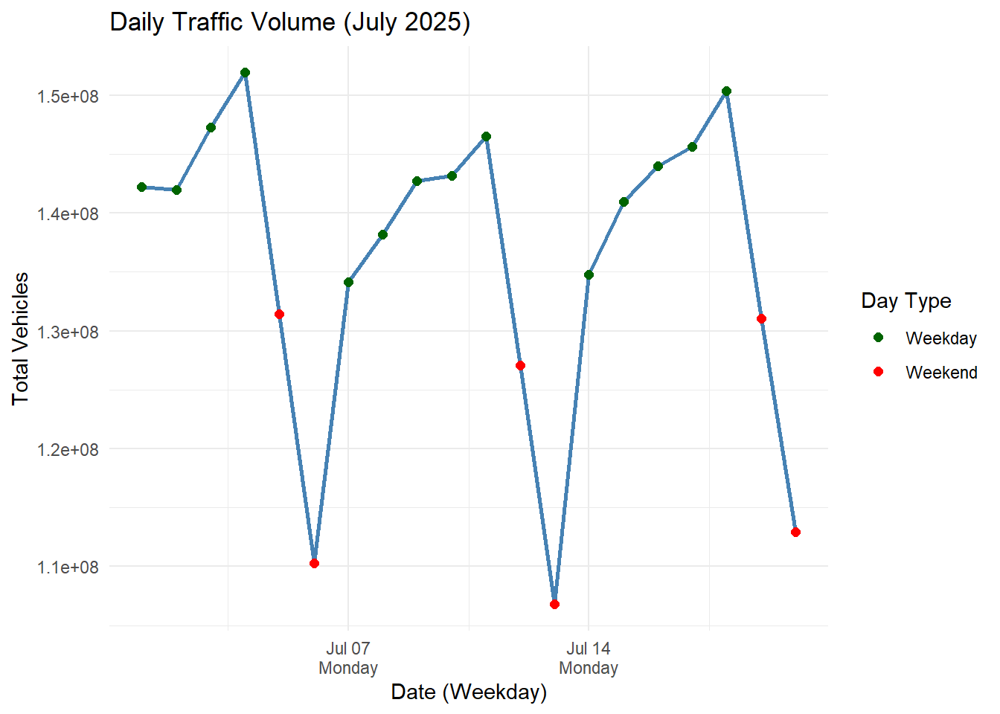
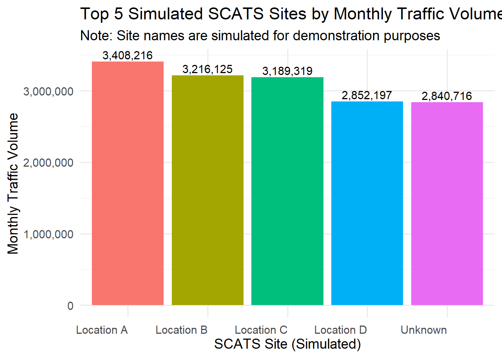
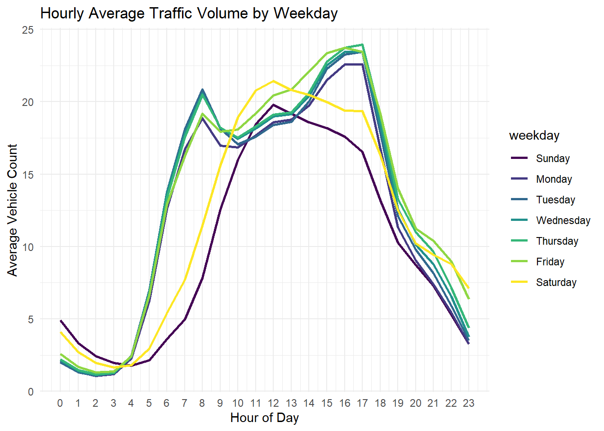

Rows: 2,305,489
Columns: 103
$ NB_SCATS_SITE <dbl> 100, 100, 100, 100, 100, 100, 100, 100, 100, 100, 10…
$ QT_INTERVAL_COUNT <date> 2025-07-01, 2025-07-01, 2025-07-01, 2025-07-01, 202…
$ NB_DETECTOR <dbl> 1, 2, 3, 4, 5, 6, 7, 8, 9, 10, 11, 12, 13, 14, 15, 1…
$ V00 <dbl> 3, 8, 14, 8, 2, 0, 0, 0, 0, 0, 0, 0, 0, 0, 0, 1, 0, …
$ V01 <dbl> 3, 14, 20, 8, 2, 0, 0, 0, 0, 0, 0, 0, 0, 1, 0, 1, 0,…
$ V02 <dbl> 2, 10, 16, 8, 1, 0, 0, 0, 0, 0, 0, 0, 0, 1, 0, 1, 0,…
$ V03 <dbl> 4, 7, 12, 5, 2, 0, 0, 0, 0, 0, 0, 0, 0, 1, 0, 1, 0, …
$ V04 <dbl> 2, 9, 9, 4, 0, 0, 0, 0, 0, 0, 0, 0, 0, 0, 0, 0, 0, 0…
$ V05 <dbl> 0, 5, 15, 6, 2, 0, 0, 0, 0, 0, 0, 0, 0, 1, 0, 0, 0, …
$ V06 <dbl> 2, 5, 7, 2, 0, 0, 0, 0, 0, 0, 0, 0, 0, 0, 0, 0, 0, 0…
$ V07 <dbl> 1, 6, 7, 2, 1, 0, 0, 0, 0, 0, 0, 0, 0, 0, 0, 0, 0, 0…
$ V08 <dbl> 2, 2, 7, 5, 1, 0, 0, 0, 0, 0, 0, 0, 0, 0, 0, 0, 0, 0…
$ V09 <dbl> 0, 0, 5, 2, 1, 0, 0, 0, 0, 0, 0, 0, 0, 0, 0, 0, 0, 0…
$ V10 <dbl> 5, 3, 5, 6, 1, 0, 0, 0, 0, 0, 0, 0, 0, 0, 0, 0, 0, 0…
$ V11 <dbl> 0, 1, 7, 6, 1, 0, 0, 0, 0, 0, 0, 0, 0, 0, 0, 0, 0, 0…
$ V12 <dbl> 1, 2, 13, 4, 1, 0, 0, 0, 0, 0, 0, 0, 0, 0, 0, 0, 0, …
$ V13 <dbl> 1, 1, 6, 2, 0, 0, 0, 0, 0, 0, 0, 0, 0, 0, 0, 0, 0, 0…
$ V14 <dbl> 1, 4, 7, 4, 1, 0, 0, 0, 0, 0, 0, 0, 0, 0, 0, 0, 0, 0…
$ V15 <dbl> 0, 3, 6, 4, 1, 0, 0, 0, 0, 0, 0, 0, 0, 0, 0, 0, 0, 0…
$ V16 <dbl> 0, 0, 6, 2, 0, 0, 0, 0, 0, 0, 0, 0, 0, 0, 0, 0, 0, 0…
$ V17 <dbl> 0, 1, 10, 5, 1, 0, 0, 0, 0, 0, 0, 0, 0, 0, 0, 0, 0, …
$ V18 <dbl> 1, 5, 21, 2, 1, 0, 0, 0, 0, 0, 0, 0, 0, 0, 0, 0, 0, …
$ V19 <dbl> 1, 3, 18, 4, 2, 0, 0, 0, 0, 0, 0, 0, 0, 1, 0, 1, 0, …
$ V20 <dbl> 1, 7, 18, 8, 5, 0, 0, 0, 0, 0, 0, 0, 0, 1, 0, 1, 0, …
$ V21 <dbl> 0, 11, 28, 14, 1, 0, 0, 0, 0, 0, 0, 0, 0, 0, 0, 1, 0…
$ V22 <dbl> 2, 19, 40, 28, 5, 0, 0, 0, 0, 0, 0, 0, 0, 1, 0, 0, 0…
$ V23 <dbl> 14, 22, 53, 27, 6, 0, 0, 0, 0, 0, 0, 0, 0, 1, 0, 1, …
$ V24 <dbl> 10, 28, 38, 32, 8, 0, 0, 0, 0, 0, 0, 0, 0, 1, 0, 1, …
$ V25 <dbl> 9, 44, 67, 49, 3, 0, 0, 0, 0, 0, 0, 0, 0, 1, 0, 1, 0…
$ V26 <dbl> 10, 56, 89, 70, 9, 0, 0, 0, 0, 0, 0, 0, 0, 1, 0, 1, …
$ V27 <dbl> 9, 52, 80, 63, 17, 0, 0, 0, 0, 0, 0, 0, 0, 1, 0, 2, …
$ V28 <dbl> 5, 58, 68, 65, 8, 0, 0, 0, 0, 0, 0, 0, 0, 1, 0, 2, 0…
$ V29 <dbl> 10, 78, 92, 85, 12, 0, 0, 0, 0, 0, 0, 0, 0, 2, 0, 1,…
$ V30 <dbl> 6, 92, 110, 103, 4, 0, 0, 0, 0, 0, 0, 0, 0, 1, 0, 1,…
$ V31 <dbl> 12, 115, 100, 112, 11, 0, 0, 0, 0, 0, 0, 0, 0, 2, 0,…
$ V32 <dbl> 16, 99, 100, 106, 14, 0, 0, 0, 0, 0, 0, 0, 0, 1, 0, …
$ V33 <dbl> 25, 128, 133, 138, 15, 0, 0, 0, 0, 0, 0, 0, 0, 1, 0,…
$ V34 <dbl> 12, 147, 152, 135, 27, 0, 0, 0, 0, 0, 0, 0, 0, 1, 0,…
$ V35 <dbl> 14, 134, 141, 164, 21, 0, 0, 0, 0, 0, 0, 0, 0, 1, 0,…
$ V36 <dbl> 12, 130, 106, 106, 21, 0, 0, 0, 0, 0, 0, 0, 0, 2, 0,…
$ V37 <dbl> 14, 100, 102, 93, 16, 0, 0, 0, 0, 0, 0, 0, 0, 1, 0, …
$ V38 <dbl> 7, 107, 101, 109, 13, 0, 0, 0, 0, 0, 0, 0, 0, 2, 0, …
$ V39 <dbl> 5, 113, 102, 92, 13, 0, 0, 0, 0, 0, 0, 0, 0, 1, 0, 2…
$ V40 <dbl> 7, 101, 105, 85, 15, 0, 0, 0, 0, 0, 0, 0, 0, 2, 0, 1…
$ V41 <dbl> 7, 107, 104, 104, 15, 0, 0, 0, 0, 0, 0, 0, 0, 2, 0, …
$ V42 <dbl> 8, 101, 97, 92, 10, 0, 0, 0, 0, 0, 0, 0, 0, 2, 0, 1,…
$ V43 <dbl> 15, 98, 83, 78, 18, 0, 0, 0, 0, 0, 0, 0, 0, 2, 0, 1,…
$ V44 <dbl> 13, 121, 102, 93, 12, 0, 0, 0, 0, 0, 0, 0, 0, 0, 0, …
$ V45 <dbl> 14, 125, 101, 86, 13, 0, 0, 0, 0, 0, 0, 0, 0, 2, 0, …
$ V46 <dbl> 13, 107, 94, 73, 12, 0, 0, 0, 0, 0, 0, 0, 0, 1, 0, 1…
$ V47 <dbl> 16, 123, 96, 87, 18, 0, 0, 0, 0, 0, 0, 0, 0, 2, 0, 2…
$ V48 <dbl> 6, 123, 94, 82, 17, 0, 0, 0, 0, 0, 0, 0, 0, 2, 0, 1,…
$ V49 <dbl> 12, 116, 107, 98, 12, 0, 0, 0, 0, 0, 0, 0, 0, 1, 0, …
$ V50 <dbl> 14, 126, 107, 91, 14, 0, 0, 0, 0, 0, 0, 0, 0, 1, 0, …
$ V51 <dbl> 11, 125, 122, 109, 22, 0, 0, 0, 0, 0, 0, 0, 0, 2, 0,…
$ V52 <dbl> 10, 122, 85, 99, 18, 0, 0, 0, 0, 0, 0, 0, 0, 2, 0, 1…
$ V53 <dbl> 16, 105, 111, 109, 11, 0, 0, 0, 0, 0, 0, 0, 0, 1, 0,…
$ V54 <dbl> 17, 111, 111, 105, 16, 0, 0, 0, 0, 0, 0, 0, 0, 1, 0,…
$ V55 <dbl> 12, 119, 117, 104, 14, 0, 0, 0, 0, 0, 0, 0, 0, 2, 0,…
$ V56 <dbl> 12, 139, 116, 121, 14, 0, 0, 0, 0, 0, 0, 0, 0, 2, 0,…
$ V57 <dbl> 11, 144, 142, 140, 13, 0, 0, 0, 0, 0, 0, 0, 0, 2, 0,…
$ V58 <dbl> 13, 125, 127, 145, 13, 0, 0, 0, 0, 0, 0, 0, 0, 1, 0,…
$ V59 <dbl> 19, 163, 139, 142, 16, 0, 0, 0, 0, 0, 0, 0, 0, 2, 0,…
$ V60 <dbl> 20, 175, 149, 169, 13, 0, 0, 0, 0, 0, 0, 0, 0, 1, 0,…
$ V61 <dbl> 20, 175, 178, 177, 24, 0, 0, 0, 0, 0, 0, 0, 0, 1, 0,…
$ V62 <dbl> 11, 201, 173, 173, 22, 0, 0, 0, 0, 0, 0, 0, 0, 2, 0,…
$ V63 <dbl> 21, 196, 182, 184, 17, 0, 0, 0, 0, 0, 0, 0, 0, 2, 0,…
$ V64 <dbl> 19, 213, 208, 183, 15, 0, 0, 0, 0, 0, 0, 0, 0, 1, 0,…
$ V65 <dbl> 15, 222, 212, 221, 10, 0, 0, 0, 0, 0, 0, 0, 0, 1, 0,…
$ V66 <dbl> 9, 216, 199, 196, 8, 0, 0, 0, 0, 0, 0, 0, 0, 2, 0, 2…
$ V67 <dbl> 18, 224, 206, 215, 24, 0, 0, 0, 0, 0, 0, 0, 0, 2, 0,…
$ V68 <dbl> 12, 240, 215, 225, 25, 0, 0, 0, 0, 0, 0, 0, 0, 1, 0,…
$ V69 <dbl> 14, 217, 191, 211, 10, 0, 0, 0, 0, 0, 0, 0, 0, 2, 0,…
$ V70 <dbl> 15, 209, 195, 205, 15, 0, 0, 0, 0, 0, 0, 0, 0, 2, 0,…
$ V71 <dbl> 15, 206, 190, 212, 15, 0, 0, 0, 0, 0, 0, 0, 0, 0, 0,…
$ V72 <dbl> 12, 181, 163, 170, 12, 0, 0, 0, 0, 0, 0, 0, 0, 2, 0,…
$ V73 <dbl> 10, 172, 173, 157, 8, 0, 0, 0, 0, 0, 0, 0, 0, 1, 0, …
$ V74 <dbl> 12, 150, 119, 139, 16, 0, 0, 0, 0, 0, 0, 0, 0, 1, 0,…
$ V75 <dbl> 13, 131, 129, 118, 13, 0, 0, 0, 0, 0, 0, 0, 0, 3, 0,…
$ V76 <dbl> 15, 108, 89, 82, 15, 0, 0, 0, 0, 0, 0, 0, 0, 1, 0, 3…
$ V77 <dbl> 12, 101, 103, 86, 19, 0, 0, 0, 0, 0, 0, 0, 0, 2, 0, …
$ V78 <dbl> 14, 78, 83, 74, 13, 0, 0, 0, 0, 0, 0, 0, 0, 2, 0, 2,…
$ V79 <dbl> 7, 89, 75, 58, 15, 0, 0, 0, 0, 0, 0, 0, 0, 2, 0, 2, …
$ V80 <dbl> 11, 78, 94, 70, 7, 0, 0, 0, 0, 0, 0, 0, 0, 1, 0, 1, …
$ V81 <dbl> 11, 81, 61, 57, 16, 0, 0, 0, 0, 0, 0, 0, 0, 1, 0, 1,…
$ V82 <dbl> 9, 81, 77, 70, 7, 0, 0, 0, 0, 0, 0, 0, 0, 2, 0, 2, 0…
$ V83 <dbl> 5, 53, 75, 52, 11, 0, 0, 0, 0, 0, 0, 0, 0, 1, 0, 1, …
$ V84 <dbl> 13, 65, 65, 59, 15, 0, 0, 0, 0, 0, 0, 0, 0, 1, 0, 1,…
$ V85 <dbl> 9, 65, 68, 78, 14, 0, 0, 0, 0, 0, 0, 0, 0, 0, 0, 1, …
$ V86 <dbl> 29, 77, 93, 79, 9, 0, 0, 0, 0, 0, 0, 0, 0, 2, 0, 1, …
$ V87 <dbl> 3, 45, 64, 63, 12, 0, 0, 0, 0, 0, 0, 0, 0, 1, 0, 1, …
$ V88 <dbl> 7, 33, 63, 48, 4, 0, 0, 0, 0, 0, 0, 0, 0, 0, 0, 1, 0…
$ V89 <dbl> 11, 51, 55, 47, 13, 0, 0, 0, 0, 0, 0, 0, 0, 2, 0, 1,…
$ V90 <dbl> 7, 43, 57, 41, 8, 0, 0, 0, 0, 0, 0, 0, 0, 1, 0, 1, 0…
$ V91 <dbl> 4, 38, 47, 37, 12, 0, 0, 0, 0, 0, 0, 0, 0, 1, 0, 1, …
$ V92 <dbl> 5, 32, 43, 23, 3, 0, 0, 0, 0, 0, 0, 0, 0, 1, 0, 0, 0…
$ V93 <dbl> 1, 15, 27, 18, 5, 0, 0, 0, 0, 0, 0, 0, 0, 1, 0, 1, 0…
$ V94 <dbl> 2, 14, 23, 13, 4, 0, 0, 0, 0, 0, 0, 0, 0, 1, 0, 1, 0…
$ V95 <dbl> 3, 11, 31, 13, 4, 0, 0, 0, 0, 0, 0, 0, 0, 1, 0, 1, 0…
$ NM_REGION <chr> "WV1", "WV1", "WV1", "WV1", "WV1", "WV1", "WV1", "WV…
$ CT_RECORDS <dbl> 96, 96, 96, 96, 96, 96, 96, 96, 96, 96, 96, 96, 96, …
$ QT_VOLUME_24HOUR <dbl> 882, 8316, 8266, 7754, 996, 0, 0, 0, 0, 0, 0, 0, 0, …
$ CT_ALARM_24HOUR <dbl> 0, 0, 0, 0, 0, 0, 0, 0, 0, 0, 0, 0, 0, 0, 0, 0, 0, 0…Commute Optimization Project
1. Project Background
Melbourne faces increasing traffic congestion, especially during peak commuting hours. This project uses traffic sensor data from SCATS detectors to analyze vehicle volume patterns. The goal is to identify high-congestion periods and propose data-driven recommendations for signal timing and route planning.
2. Data Overview
Step 1: Load all CSVs into one dataset
Why this step?
The dataset consists of multiple daily CSV files from July 2025. We load and merge them to create a complete dataset for analysis.
Step 2: Preview structure and check completeness
Why this step?
I inspect the dataset’s structure to understand available variables (e.g. site ID, date, detector volume v00–v95) and ensure all expected files were successfully loaded.
[1] "NB_SCATS_SITE" "QT_INTERVAL_COUNT" "NB_DETECTOR"
[4] "V00" "V01" "V02"
[7] "V03" "V04" "V05"
[10] "V06" "V07" "V08"
[13] "V09" "V10" "V11"
[16] "V12" "V13" "V14"
[19] "V15" "V16" [1] 2305489 103Step 3: Check data consistency across days
Why this step?
I visualize the number of records per day to ensure data coverage is consistent throughout July. Sudden drops may indicate missing files or data collection issues.

3. Congestion Analysis
Objective
To identify peak congestion periods across different days and hours, helping prioritize signal timing and commute management strategies.
Step 1: Calculate Total Volume per Record
Why this step?
The original dataset records traffic counts across multiple detector columns (v00 to v95). Summing these provides the total vehicle count per row.
Step 2: Aggregate Daily Volume
Why this step? Summarizing daily total volume allows us to observe overall traffic trends over time and detect any weekday-weekend patterns.

Key Insight:
> The trend reveals a clear weekly pattern: traffic volumes remain high during weekdays and drop sharply over weekends.
This confirms that congestion is driven by weekday commuting, making morning and evening peak hours during those days critical for optimization.
Step 3: Aggregate Traffic by Hour
Why this step?
While daily totals help us detect weekday-weekend patterns, they do not reveal intra-day congestion spikes. To optimize signal timing and improve route planning, we need to understand which hours of the day experience the highest traffic volumes, especially during morning and evening peaks.
This step summarizes traffic by hour to identify rush hour windows and evaluate if there are consistent congestion patterns across days.
